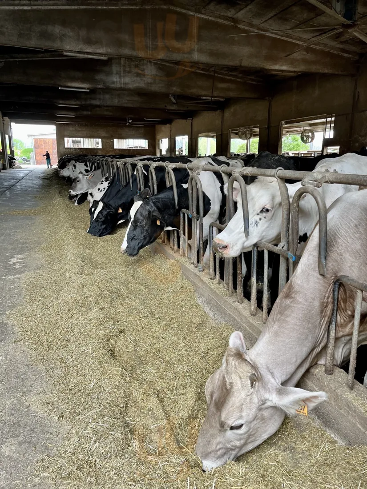
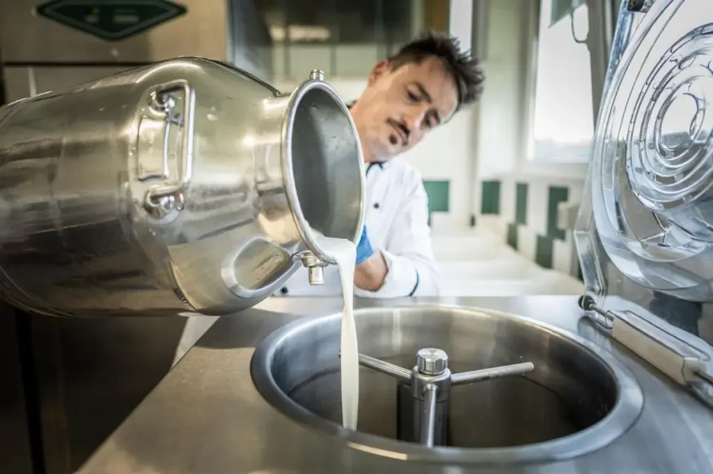
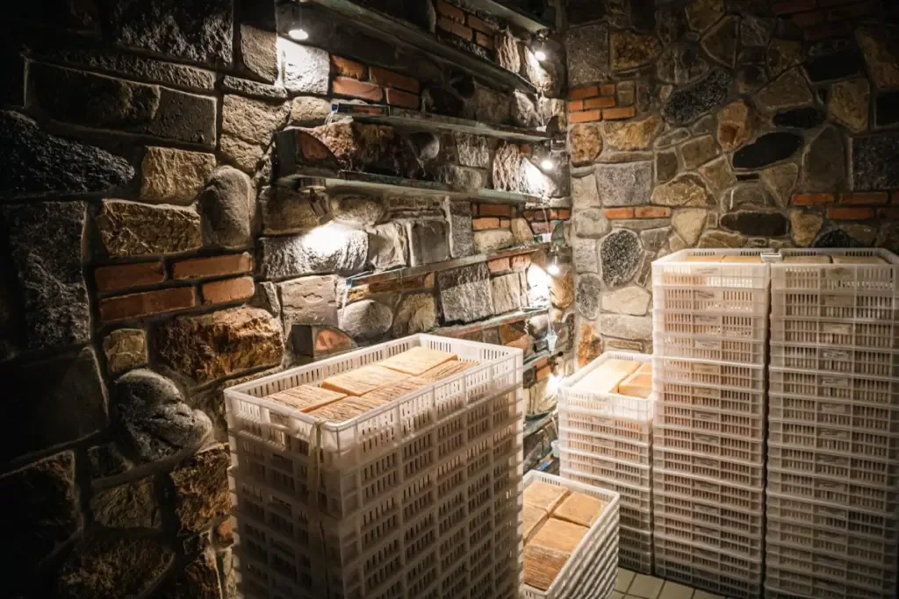
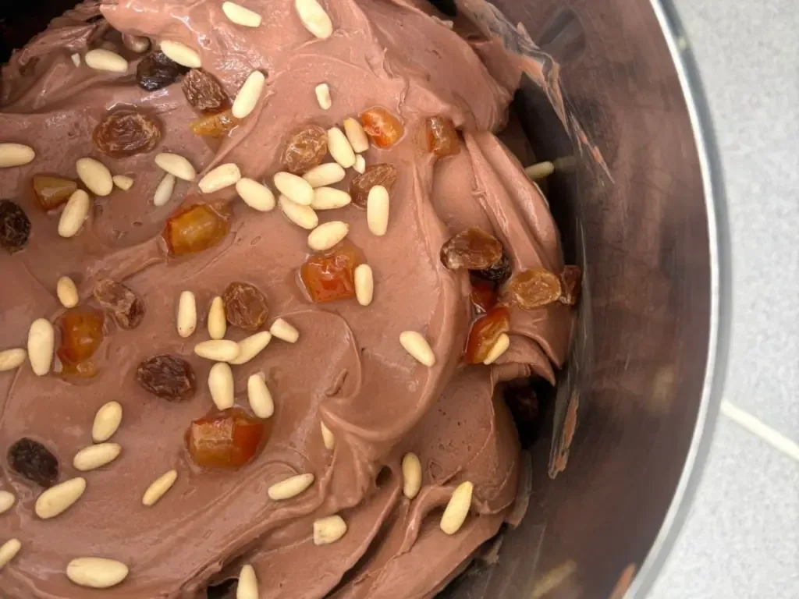
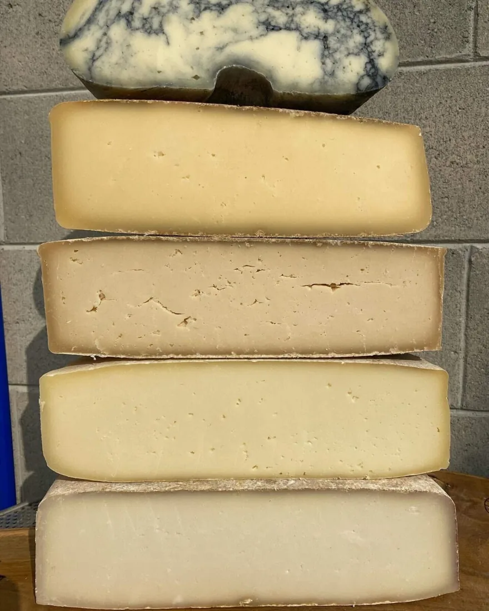
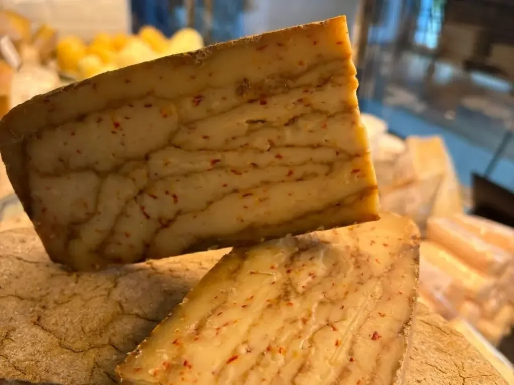
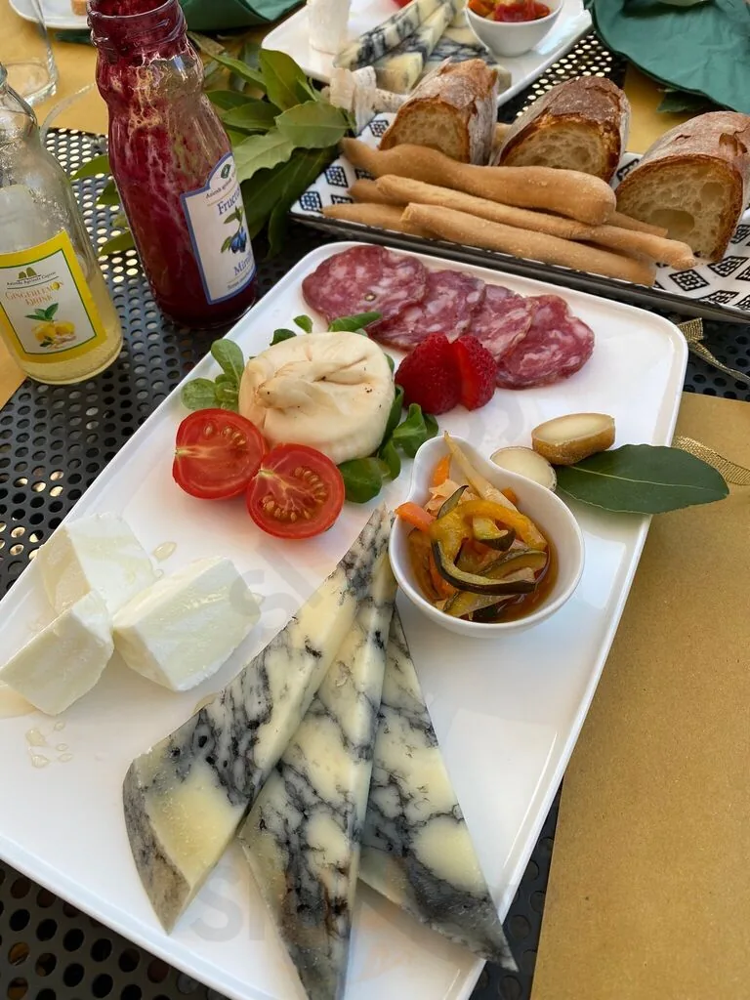
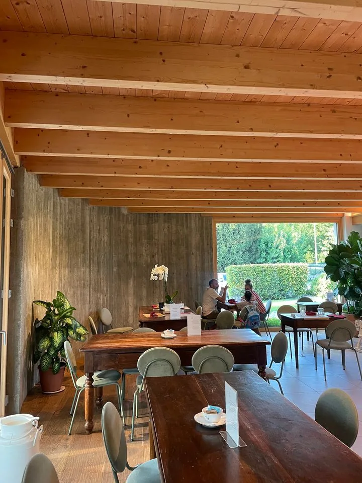

Rispetto per gli animali
Il lavoro comincia dalla cura quotidiana. Gli animali possono muoversi liberamente in stalla e accedere agli spazi esterni.
UNA STORIA DI FAMIGLIA · DAL 1948
Dalla cura degli animali al latte, dal latte alle nostre mani. A Rogeno portiamo avanti una storia fatta di persone, territorio e passione.
Scopri la fattoria ↗Ci trovi a Rogeno →LE NOSTRE RADICI
Nel 1948, a Casletto, prendono forma due percorsi: da una parte l'allevamento e il latte, dall'altra l'arte casearia.
Generazione dopo generazione, quelle competenze si sono incontrate. Nel 2018 Francesca, Riccardo e Simone hanno riunito questa eredità in un unico progetto: Fattoria Dassogno.
Oggi la fattoria continua a unire allevamento, trasformazione e gelateria, con lo sguardo rivolto al futuro e i piedi ben piantati nella propria terra.
IL NOSTRO MODO DI ESSERE
La qualità non è un'etichetta da mettere su una confezione. È l'insieme delle scelte che facciamo ogni giorno, a partire dal rispetto per gli animali e dalla cura della materia prima.
Il lavoro comincia dalla cura quotidiana. Gli animali possono muoversi liberamente in stalla e accedere agli spazi esterni.
Seguiamo da vicino il percorso del latte, dall'allevamento alle lavorazioni, valorizzando la conoscenza della materia prima.
Il territorio non è uno sfondo: è parte della nostra identità, delle relazioni e delle scelte di ogni giorno.
Ogni lavorazione richiede esperienza, attenzione e tempo. La bontà nasce anche dalla cura delle mani che la preparano.
DAL CAMPO ALLA TAVOLA
Una filiera che unisce allevamento, latte, caseificio e gelateria. Ogni passaggio racconta un pezzo della famiglia e del mestiere.

01 / ALLEVAMENTOCi prendiamo cura degli animali e del loro ambiente. È da qui che inizia il nostro lavoro.

02 / IL LATTEIl latte della fattoria è il punto di partenza di tante preparazioni, legate alla stessa origine.

03 / IL CASEIFICIOFormaggi freschi e stagionati, ricotta, mozzarella e specialità: la tradizione incontra la ricerca.

04 / LA GELATERIADal latte e dagli ingredienti selezionati nascono gelati artigianali e dolci dal carattere autentico.

LE NOSTRE BONTÀ
Dal latte nascono prodotti diversi, accomunati dalla cura delle persone che li preparano e dalla voglia di valorizzare ogni ingrediente.
Le disponibilità seguono la produzione e la stagionalità: chiedici cosa trovi oggi in fattoria.
Chiedici informazioni ↗UN PO' DI FATTORIA



UNA STORIA CHE ARRIVA LONTANO
La passione quotidiana della fattoria ha incontrato l'attenzione di chi racconta le eccellenze del territorio e dell'agroalimentare.
CI VEDIAMO IN FATTORIA
Passa a trovarci a Rogeno: ti aspettiamo per scoprire i nostri prodotti e conoscere da vicino la nostra realtà.
Come raggiungerci ↗